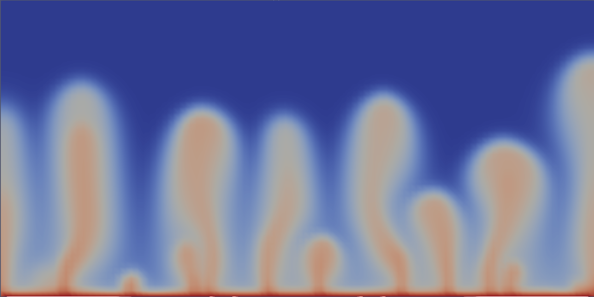

Intro to flow in porous media
In this lecture, we will introduce the physical processes and equations governing flow in porous media. We will also discuss how these equations are implemented in HydrothermalFoam, the custom OpenFOAM solver we will be using throughout this course.
Direct simulations
Flow in porous media is all about scales and homogenization. On a microscopic level, fluids flow through a complex network of pores and fractures. The governing equations are the Navier-Stokes equations, which describe the motion of viscous fluids.
There are many different forms of the Navier-Stokes equations, depending on the assumptions made. A simplified form is implemented in the icoFoam solver in OpenFOAM. It treats incompressible, laminar, and transient fluid flow and solves the following equations:
where:
\(\mathbf{U}\) is the velocity vector field,
\(p\) is the kinematic pressure (i.e., pressure divided by density),
\(\nu\) is the kinematic viscosity,
\(t\) is time.
The first equation is the momentum conservation equation:
\(\partial \mathbf{U} / \partial t\) represents unsteady acceleration (how velocity changes over time),
\((\mathbf{U} \cdot \nabla)\mathbf{U}\) is the advection (fluid moving itself),
\(-\nabla p\) is the pressure gradient force,
\(\nu \nabla^2 \mathbf{U}\) is the viscous diffusion of momentum.
The second equation enforces incompressibility, meaning the volume of fluid elements does not change over time.
In icoFoam, these equations are solved using the finite volume method and the PISO algorithm (Pressure Implicit with Splitting of Operators) to ensure pressure–velocity coupling and divergence-free velocity fields at each time step.
OpenFOAM also includes other solvers for different forms of the Navier-Stokes equations, such as pisoFoam for compressible flow and simpleFoam for steady-state flow.
If we wanted to directly simulate flow in a porous medium, we would need to resolve the pore space geometry and apply the Navier-Stokes equations at that scale. This is computationally very expensive and typically only feasible for small domains or simple geometries. The figure below shows an example of such a direct numerical simulation of flow through a porous medium, where the pore space is explicitly resolved.

Fig. 4 Example calculations for different disk packings. Notice how flow organizes into dominant flow paths.
Continuum approach
To model flow in porous media on larger scales, we use a continuum approach. Instead of resolving the pore space, we treat the porous medium as a homogenized continuum and describe flow using Darcy’s law. Darcy’s law states that the volumetric flow rate through a porous medium is proportional to the pressure gradient (that deviates from hydrostatic) and inversely proportional to the fluid viscosity:
Here, \(\vec{u}\) is the Darcy velocity, which is the volume-averaged flow velocity through the porous medium. It is related to the pore velocity \(\vec{v}\), the actual speed at which fluids are moving, by the porosity \(\epsilon\). The parameters \(\mu_f\) and \(k\) are the fluid’s dynamic viscosity and the medium’s permeability, respectively.

Fig. 5 Example of convection in porous media with an effective permeability.
Darcy’s law is valid for laminar flow in porous media, where inertial effects are negligible. It assumes that the flow is slow enough that viscous forces dominate over inertial forces, which is typically the case in groundwater flow and hydrothermal systems.
Notice how Darcy’s law is a linear relationship between the Darcy velocity and the pressure gradient, in contrast to the nonlinear Navier-Stokes equations. This linearity makes Darcy’s law much simpler to solve numerically, allowing us to model flow in porous media over larger spatial and temporal scales.
Notice also how we now have two extra parameters that encapsulate all the complexity of the flow: the porosity \(\epsilon\) and the permeability \(k\). It is important to note that the absolute values of porosity and permeability in porous media are not universal constants but depend on the choice of the Representative Elementary Volume (REV). The REV is the scale over which microscale heterogeneities are averaged, different choices can lead to significantly different estimates of these effective properties. This scale dependence means that porosity and permeability are not always independently observable — observational data often reflect a combined, scale-dependent response of the medium, making it difficult to infer one property without assumptions about the other. In media with strong heterogeneities or multi-scale structures, identifying a meaningful REV is particularly challenging. We need to keep these limitations in mind when applying continuum-scale flow models like Darcy’s law to natural systems.
Tip
There are many resources on the derivation of the Navier–Stokes equations, including several tailored to OpenFOAM. We particularly recommend Tobias Holzmann’s book. Also see the new book by CFD Direct. There is also a great pdf on the relationship between Navier-Stokes and Darcy flow on the webpages of Cyprien Soulaine.